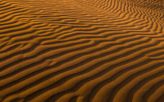
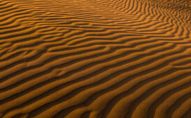

Beauty is seen through a lens
Perspective matters. All my photographs try to capture that perspective, however subtle.
 

- Date July 2019
- Location Morrocan Highlands
- Camera Canon EOS 1D Mark IV
- Lens 70mm f2.8 @ 1/16”